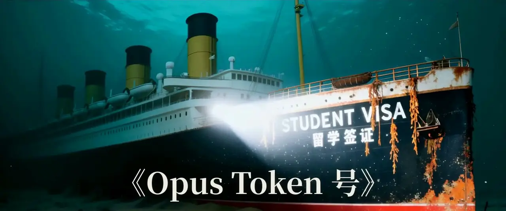

同类失败三次，就不再重抽。
断腕镜头要求手断开留在女主手里。视频模型试了三次：断手又长回来、他主动跳水、他上浮去捞。我判断这是模型的能力边界，不是运气。断开过程改为“闪白 + 咔声 + 切镜”，下沉用抠像后期合成。
方法：先定止损规则，再花钱；把镜头拆成模型可控的部分。
用《泰坦尼克号》的名场面，讲一场毕业后和 Opus 的告别。
执行交给 AI agent，我负责创意、标准和拍板。
我作为出品人和产品负责人，带着一支 AI agent 团队，把一部 2 分 25 秒的喜剧短片从 0 做到发布。迭代到第 9 版的过程中，我把模糊的创意判断，变成了可执行的标准和流程。

本片为 AI 辅助制作，角色均为原创。
视频生成最贵，也最不可控。所以我把问题尽量拦在便宜的环节：节奏在带声分镜里定，硬伤在关键帧里查，最难的镜头先花小钱试。
先用配音和草图把节奏走一遍。
悬空、手、光向、镜面脸、站位，逐项检查。
最难的 4 个镜头先花 160 积分验证。
简单镜头用便宜档位；模型做不到的，用后期合成。
每一版由没参与制作的 agent 审片。
配套的标准也写成了规则，agent 照着执行、照着自检：
我给每个 agent 写了角色定义：它负责什么、读什么、交付什么。上一个 agent 的交付物，就是下一个的输入。
| 我负责：判断与标准 | Agent 负责：执行 |
|---|---|
| 选题和核心笑点：船名、冰山、台词里的梗 | 剧本初稿、分镜表、提示词 |
| 角色设定和镜头复核规则 | 关键帧出图、视频生成 |
| 三道审片关口的拍板，配音盲听选择 | 配音、音效、配乐的生成与筛选 |
| 路线止损：叫停 3D 路线，拒绝付费接口 | 方案调研、成本测算 |
| 把“不够大片感”这类意见拆成具体要求 | 合成、调色、字幕、混音、导出和技术自检 |
agent 申请资源前要写明范围、目标、预计时间和预估消耗，折算成周额度的百分比，我批了才用。
带声分镜、风险试镜、完整粗剪。关口之间 agent 自己推进，关口上由我决定过不过。
前期每项资源都要我审批。标准和关口定清楚后，改为 agent 自主推进，只在没把握时来问我。
人物呆板，改进效果配不上消耗的成本。
能出片，但镜头接不上。我列出 6 处衔接问题。
图像模型出关键帧，视频模型生成镜头，免费算力跑配音和超分。
按 7 条意见重剪，片头配乐做 A/B，加双语字幕。
预算按镜头分档：空镜、远景这类简单镜头用 10 积分一条的档位，重镜头用 20 积分一条的档位。花到上限就改用后期合成，不加钱。最后用约 1,040 积分，做完了计划 1,600 积分的活。
断腕镜头要求手断开留在女主手里。视频模型试了三次：断手又长回来、他主动跳水、他上浮去捞。我判断这是模型的能力边界，不是运气。断开过程改为“闪白 + 咔声 + 切镜”，下沉用抠像后期合成。
第一版素材每个镜头单看都还行，连起来处处跳戏。我逐镜列出问题：画风不一致、色温不一致、动作缺失、空间关系突变。做法改为“上一镜最后一帧作为下一镜第一帧”的接力生成。
片头被评“不够大片感”。我把它拆成三件事：零散鼓点换成一条完整的预告片配乐，重击对准字卡出字的那一帧，字卡时音乐不能断。一次做 A、B 两版，选 B 版再改。
结尾的老人特写 3 秒后脸开始漂移，局部修补后更糟。我改了镜头：3 秒处快速推近到她举着的红纸，脸出画，台词落在红纸上。